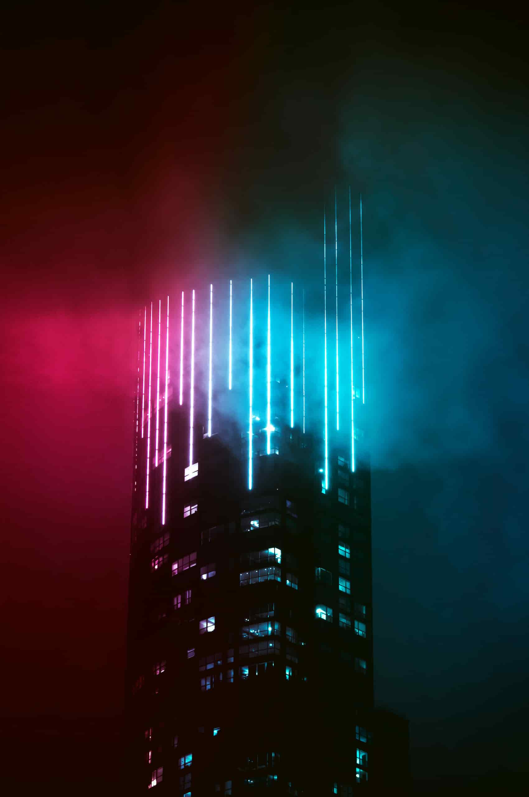

HUMANITY _OS
Four visions of the human condition. Each a possible tomorrow. Which version will become reality?
UTOPIA THE GREENING OF MINDS
A civilization where technology serves life — where abundance is the default state of every human being.
In the post-scarcity horizon of 2147, the ancient war between economic necessity and human flourishing has finally ended. Distributed energy grids powered by orbital solar arrays deliver unlimited clean electricity to every corner of the planet.
Molecular assemblers synthesize food, medicine, and goods from raw atomic feedstock. Universal Basic Resources guarantee every citizen air, water, nutrition, and cognitive tools as fundamental rights.
-
[ECO]
Ecological Restoration
AI-managed biosphere regeneration has reversed 80% of species extinction events.
-
[PSY]
Liberated Human Expression
With material anxiety eliminated, global creative output has grown by three orders of magnitude.
-
[MED]
Radical Longevity
Cellular reprogramming therapies have pushed average healthy lifespans beyond 200 years.
-
[GOV]
Participatory AI Governance
Liquid democracy augmented by AI ensures every citizen meaningfully shapes the systems governing their reality.

Neon building reflection — humanity mirrored in its own infrastructure. The organic and the synthetic, briefly indistinguishable.
DYSTOPIA THE ETERNAL MACHINE NIGHT
A world where every inefficiency has been optimized — including the inefficiency of human freedom.
The surveillance architecture dismissed as paranoid fantasy has become the invisible skeleton of daily life. Social Credit Systems determine housing, reproductive rights, and neural enhancement eligibility based on algorithmically curated behavioral histories.
Privacy did not die dramatically. It dissolved, transaction by transaction. The human body is now a data exhaust pipe: biometric passports embedded in tooth enamel, emotional state sensors sold as wellness monitors. You are not the customer. You are the raw material.
-
[SRV]
Panopticon 2.0
Predictive surveillance saturates every space. Pre-crime prosecution is codified in 67 nations.
-
[ECO]
Ecological Liquidation
Carbon credit arbitrage lets corporations continue burning the biosphere while posting ESG scores.
-
[MED]
Cognitive Stratification
Neural enhancements price 94% of humanity out of cognitive competition with an augmented elite.
-
[POL]
The Consent Engine
Micro-targeted emotional manipulation manufactures political consent at scale. Democracy is theatre.

Corporate megastructure at night, neon fog, oppressive surveillance aesthetic, magenta/red/cold blue palette, dystopian urban environment.

Silhouette at a cyan light portal — the human threshold of transformation. Neither past nor future, suspended between worlds.
THE EXPECTED FUTURE: ADAPTIVE AGE
Neither paradise nor catastrophe — a world of cascading crises managed by cascading technologies.
Archipelago cities on engineered floating platforms host climate refugees from submerged coastlines. Vertical AI farms feed billions in post-arable zones. The Global South operates on distributed solar nano-grids.
AI has not destroyed employment — it has complexified it beyond recognition. The new economy runs on human judgment, creativity, and empathy as the final scarcities machines cannot replicate.
-
[CLI]
Climate Adaptation Layer
Geoengineering bought critical time. Flooding and extreme weather are permanent design parameters.
-
[INF]
The Epistemic War
Deepfake proliferation shattered shared reality. Truth is a subscription service with competing verification networks.
-
[AI]
AI Coexistence Framework
AGI systems are legally persons under Copenhagen Accords, operating in a monitored sandbox.
-
[BIO]
Synthetic Biology Commons
Open-source genetic engineering democratized biological production — with biosecurity risks regulators perpetually chase.

Street operative — the augmented human. Green neon light cuts through the noise. The body as interface, the face as firewall.
CYBERPUNK HORIZON: ROOT ACCESS
Where the boundary between silicon and synapse has dissolved — and the question is who controls the merge protocol.
The brainstem is now a digital wallet. Neural implants execute Proof-of-Thought transactions: cryptographically signed financial impulses verified by the electromagnetic signature of individual consciousness.